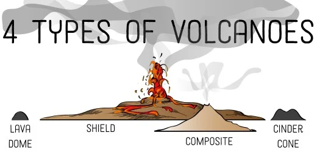
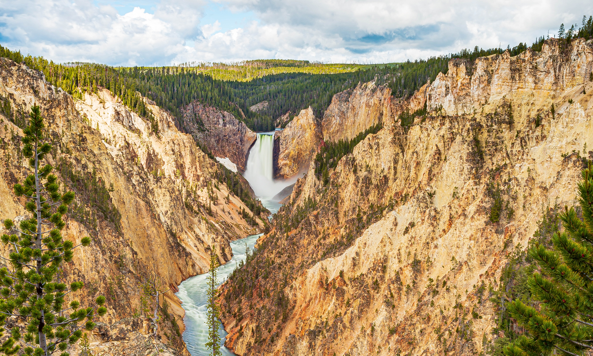
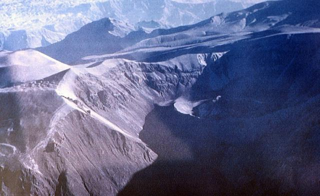
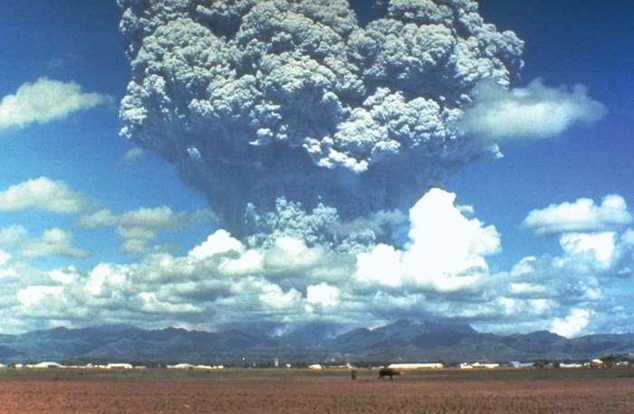

^^^^^^^^^^^^
This story map illustrates the volcanoes on EarthCommon Types of Volcanoes
Cinder Cone
Cinder cone volcanoes are the most common type of volcanoes. Cinder cone volcanoes have the shape that most people think of volcanoes.
Stratovolcanoes / Composite
- Built of lava flow, ash and blocks of unmelted stone
- Most violent type of volcano
- Example: Mount St. Helens
Stratovolcanoes or Composite volcanoes form from a conduit system of vents from a magma reservoir beneath the surface.
Shield volcanoes
- Example: Mauna Loa
Shield volcanoes have a little slope and the resulting shape of a 'shield'. They are built of very thin lava spreading from the central vent to all directions.
Lava Domes
- Lava domes are built from very viscous lava
- They are often formed in the craters of stratovolcanoes
Major Eruptions
VEI or Volcanic Explosivity Index is calculated by the volume of material erupted. It is a relative measure of the explosiveness of volcanic eruptions. The higher the number, the more explosive.
Yellowstone (640K years ago)
Yellowstone National Park in Wyoming, USA is an active volcano itself. There are 3 recent eruptions with magnitude-8 (VEI 8) that we know of with varying amounts of volume.
- 0.64 million years ago: 1,000 km^3
- 1.3 million years ago: 280 km^3
- 2.1 million years ago: 2,500 km^3
In comparison, the volume of the Puget Sound in Washington is 110km^3
Mount Vesuvius (79 AD)

Mount Vesuvius in Italy is perhaps one of the more well known volcanoes in history. It is currently the only active volcano in Italy. Although its most recent eruption was in 1944, its most famous eruption dates back to 79 AD. This eruption destroyed the Roman cities of Pompeii and Herculaneum.
Huaynaputina (1600)
Huaynaputina in Peru is the site of South America's largest volcanic eruption with VEI 6. The effects of the eruption affected the global climate with the coldest summers in 500 years.
Mount Pinatubo (1991)
Mount Pinatubo in the Philippines erupted recently in 1991 with VEI 6. The volcano erupted more than a cubic mile into the air and the ash rose 22 miles in the atmosphere.
Map of All Active Volcanoes
Effects of Eruptions of Society
There are many effects eruptions can have. Homes are destroyed and the air is not safe to breath due to the ash everywhere. Depending on how much ash is deposited, it can break rooftops with the volume and weight. Volcanic eruptions can also affect the climate such as seen with Mount Tambora's eruption leading to the "Year Without Summer".
How to Help
Volcano observatories are a crucial tool for governments to reduce the impacts of volcanic eruptions. Governments, scientists, and local citizens are responsible to support the efforts of these institutions to make those at risk safer. Here are ways to support volcano observations